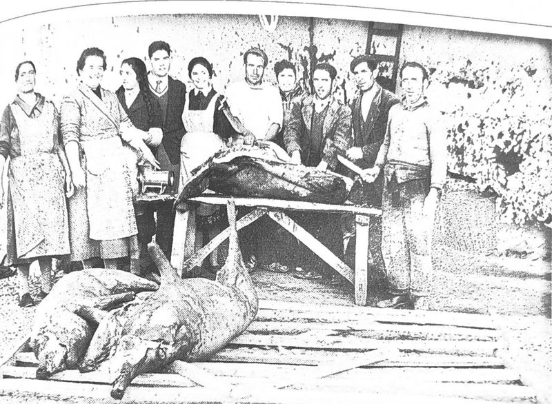

La matanza
El mondongo de Alaejos contado paso a paso por Antonio Lucas Varela, de los preparativos a los varales llenos en el «sobrao», con las recetas tradicionales de la morcilla, la longaniza, el chorizo, el morcón, el salchichón, el adobo, la manteca y el jamón.
En esta página (4 apartados · 9 min de lectura)
En Alaejos a la matanza del cerdo se le llama mondongo. Se hacía por San Martín, duraba tres o cuatro días y en ella trabajaba toda la familia, con el matanchín, la morcillera, las atadoras y la mondonguera. Antonio Lucas Varela la contó en su libro Arrecájel. Alaejos, una forma de hablar, una manera de vivir (1998), entre los «dichos y hechos» del pueblo, como una de las costumbres que «casi en su totalidad y conservando su pureza han llegado hasta nosotros». Aquí se reproduce su texto completo, con su permiso.
Las palabras propias de la matanza están explicadas al final, con la definición que el autor les dio en su vocabulario.
El mondongo
La matanza anual del cerdo es una de las costumbres que mejor se han conservado y que menos cambios ha sufrido, posiblemente haya perdido algo del carácter festivo que acompañaba a las gentes durante los tres o cuatro días que duraba el mondongo.
Con anterioridad a la fecha señalada y la participación de toda la familia empiezan los preparativos.
Del «sobrao» se rescatan las potas, los barreños, la artesa, las cuerdas para colgar al cerdo, la mesa, la máquina de picar y los varales. Todo tiene que estar preparado y limpio.
El pan, las cebollas mondongueras, el orégano, la sal, el pimentón, los ajos, las tripas saladas y el hilo de atar lo compran los chicos «recao» tras «recao».
La tarde-noche antes se pican los panes y las cebollas para las morcillas; se prepara la paja y los juncos para chamuscar y no se echa de comer a los marranos para que tengan el intestino limpio y sea más fácil el lavado de las tripas.
Muy temprano, casi de madrugada, llega el matanchín. Colocada la mesa en el corral, sacan al cerdo de la cochinera enganchándole con un garfio por las mandíbulas, única forma de dominarlo.


Una vez en ella, cada cual tiene su cometido: uno, atar la pata trasera; otro, sujetar fuertemente el brazuelo delantero, el matanchín, hacer bien su labor, y la morcillera, que espera agachada, recoger la sangre.
Los chillidos del cerdo rasgan el frío aire de la mañana y avisan a la chiquillería que no tardará en arremolinarse ante la hoguera en busca de las chitas.
Sacrificado el animal, se lo trasporta sobre unas escaleras hasta la calle y patiabierto en el suelo se le cubre con paja larga y junco para chamuscarlo. Después de un buen raspado se lo cuelga, se le extraen las vísceras y se orea durante todo el día.
Las mujeres no paran, mientras unas llenan las morcillas, otras lavan tripas, zabaco, vejiga... Los hombres esperan la visita del veterinario, pues, una vez haya echado una ojeada y hechos los comentarios de siempre, almorzarán el hígado encebollado, el zabaco asado y las collugas.
El resto de la mañana se pasa cociendo las morcillas, preparando los adobos y haciendo la comida. A media tarde, llega de nuevo el matanchín a destrazar. Al cerdo, ya frío, se lo descuelga y comienza su despiece: los jamones, los lomos, el entrecuesto, los cotudillos, las paletillas, las grasas y el magro irán a los cacharros para curar o picar, adobar o salar, hacer manteca y chicharrones, torreznos o jabón.
Del cerdo se aprovecha todo desde el rabo a los huesos y por gustar nos gustan hasta los andares (hay quien dice que hasta la conversación).
Mientras desaparece pieza a pieza, nunca falta la broma al pequeño de la familia: ¡Chico! vete donde la vecina y pídele un cuévano «pa» echar los sesos.
Al día siguiente, los hombres pican la carne de vaca y el magro. Pesar bien las cantidades de pimentón y sal, y calcular bien el ajo y el orégano es fundamental para que el picadillo esté en su punto. Una vez picado y condimentado se amasa. Con los ingredientes ya mezclados se deja reposar toda la noche.
El tercer día por la mañana, la mondonguera prueba el picadillo con el fundamento y sabiduría que da la experiencia y empiezan a embutir. Si el marrano no tenía lombrices las tripas no se rompen y se avanza mucho. Las atadoras cuentan dimes y diretes mientras ágilmente atan, pican y hacen moños. Los varales llenan de aroma y color «pimentonado» el «sobrao».
Terminada la tarea de llenar se friegan y recogen todos los cacharros que vuelven al «sobrao» hasta el próximo año.
Las recetas
El autor terminó el capítulo con las «formas tradicionales de preparación y curación» de cada pieza, con las cantidades que se usaban en Alaejos.
Morcilla
- La sangría de un cerdo.
- Cuatro panes del día anterior.
- Diez kilos de cebollas mondongueras (bajas y anchas).
- Un puñadito de orégano.
- Un poquito de pimentón.
- Dos piezas de cayena machacadas (guindilla).
- Las grasas de la papada y de las tripas (llámanse «morcillas viudas» las que tienen pocas grasas y se ponen duras enseguida).
Todos los ingredientes, una vez picadas las cebollas y los panes, se mezclan en un barreño. Se llena a mano. Una vez llenas, se las cuece hasta que, al pincharlas, no sale sangre. Luego se las cuelga en sitio aireado y fresco. Las morcillas «marraneras», las embutidas en tripas gruesas, son las primeras que se consumen para evitar que se pongan ácidas.
Longaniza
- Carne magra de cerdo picada.
- Veinte gramos de sal por kilo de carne.
- Veinticinco gramos de pimentón por kilo de carne.
- Un puñado de orégano (no pasarse pues pone la longaniza negra).
- Un diente de ajo por cada tres kilos de carne.
- Un vasito de vino blanco casero (el vino embotellado actual la pone ácida).
Todos los ingredientes se amasan bien en el barreño, se deja reposar durante una noche y se llena en tripas gruesas, rayadas a cuchillo.
Una vez embutida se cuelga en sitio fresco. El tiempo de curación es de 30 a 40 días en tiempo de heladas. Con tiempo húmedo, tarda más en curar y puede echarse a perder si no se le aplican los cuidados oportunos (secar casi a diario el moho, colgarlas en la cocina de lumbre baja etc.).
Chorizo
- Carne de vaca picada.
- Lardos y menudencias grasas del cerdo picados.
- Veinte gramos de sal por kilo de carne.
- Veinticinco a treinta gramos de pimentón por kilo de carne (la cantidad varía dependiendo de la calidad del pimentón).
- Un puñado de orégano.
- Medio diente de ajo por kilo de carne.
- Un vasito de vino blanco casero.
Para su elaboración y curación sirven las mismas indicaciones y advertencias que para la longaniza. La diferencia está en la carne, mezcla de vaca y cerdo, y en las tripas que se utilizan que suelen ser más finas, también rayadas a cuchillo.
Morcón
Para su elaboración se utiliza la misma masa que para la longaniza. Se embute en la tripa del «cagalar», llamada tripa morconera. El secreto de este embutido está en dar la vuelta a la tripa para que las grasas y gorduras de la misma, untadas con un poco de aceite y pimentón, queden en la parte interior, con lo que permanece tierno más tiempo. Tarda más en curar, lógicamente, que la longaniza.
Salchichón
- Magro de cerdo (el mejor).
- Veinte gramos de sal por kilo de carne.
- Unos granos de pimienta negra.
- Un poco de clavo fino.
- Una pizca de nuez moscada.
Una vez picado el magro se añaden todos los componentes y se amasa. Una vez embutido se cuelga en sitio fresco y seco. Tarda menos en curar que la longaniza, entre 25 y 30 días.
Adobo
- Doce litros de agua.
- Un kilo de sal.
- Dos puñados de orégano.
- Una cabeza de ajos.
- Dos cucharadas de pimentón.
Una vez preparado el caldo en un barreño de barro se sumergen los lomos, el entrecuesto, los cotudillos, las orejas etc.
El tiempo de sazón depende del tamaño y peso de las piezas, normalmente de 24 a 48 horas. Hay que estar muy pendiente del adobo pues si lo tienes más tiempo del preciso la carne coge fato. Es preferible, por tanto, que el caldo peque de salado que de soso.
Manteca
Una vez fritas las grasas y retirados los chicharrones se la embute en la vejiga y en el morcillón.
Preparación de la vejiga. Se la golpea para darla de sí; se lava con agua y vinagre y se le da la vuelta soplando con un embudo.
Preparación del morcillón: Llámase así al Ciego del cerdo. Se procede del mismo modo que con la vejiga.
Jamón
Se prepara quitándole el hueso de la bola central y estrujando la vena para que salga toda la sangre. Colocado horizontalmente, se cubre con sal gorda. Así permanecerá durante 21 días. Pasado este tiempo se quita la sal con un paño y se le unta con una mezcla de aceite y pimentón. Se cuelga en un lugar seco y fresco al menos durante 6 meses. Al no tener estirada la pata es completamente redondo.
Las palabras de la matanza
Así las definió el autor en su vocabulario. Cada una enlaza con su entrada en el Vocabulario de Alaejos.
- Mondongo
- Matanza del cerdo y todo lo que lleva consigo.
- Sobrao
- Piso sobre el doble de una casa, utilizado como granero, atrojes, trastero etc.
- Pota
- Olla en la que se guardaba la longaniza en aceite.
- Varal
- Palo largo para colgar el embutido. 2 Estacón del carro. 3 fig. Persona muy alta.
- Cochinera
- Habitáculo para los cerdos.
- Chita
- Pezuña del cerdo que los chicos quitaban y comían cuando los chamuscaban.
- Chamuscar
- Quemar levemente por la parte exterior.
- Pechero
- Palo utilizado para mantener abierta y oreada la canal del cerdo.
- Zabaco
- Estómago de los cerdos.
- Colluga
- Parte del cuello del cerdo.
- Pajarilla
- Bazo del cerdo.
- Destrazar
- Despedazar.
- Entrecuesto
- Costillas del cerdo. Entrecote.
- Cotudillo
- Pie del cerdo.
- Lardo
- Vocablo que designa lo gordo de la carne del cerdo.
- Cagalar
- Tripa del cagalar. Intestino grueso de los cerdos.
- Morcón
- Longaniza metida en la tripa del «cagalar».
- Picadillo
- Carne picada y aderezada con sal, pimentón y orégano, con la que luego se llenan las tripas de longaniza o chorizo.
- Arrapas
- Caldo que resulta de cocer las morcillas.
- Chicharrón
- Trozos de tocino, una vez frito y sacada la manteca. Tiene un origen onomatopéyico.
- Desurdidora
- Adjetivo sustantivado que designa a la mujer experta en separar las tripas de los cerdos y prepararlas para llenar.
- Peladora (la)
- En los mondongos, la encargada de separar las tripas del cerdo. Desurdidora.
- Fato
- Olor generalmente malo. ¡vaya fato!
Y dos dichos del mondongo que también recogió el libro. El primero es una locución: «hacer más trilla que un galgo en un mondongo», que «se aplica a muchas situaciones con el significado de destrozar». El segundo, la coplilla con que las mondongueras celebraban que las arrapas, el caldo de cocer las morcillas, salieran con mucho «cacho» porque se había roto alguna que otra morcilla:
Que vivan las mis arrapas,
que tienen mucho mondongo,
se comen a cucharadas
como tajadas de lomo.
Para seguir leyendo
- Antonio Lucas Varela, Arrecájel. Alaejos, una forma de hablar, una manera de vivir (Alaejos, Fundación Hernández Puertas, 1998), capítulo III, «Dichos y hechos»: «El mondongo» y «Formas tradicionales de preparación y curación». Texto reproducido con permiso del autor.
- Las mondongueras y morcilleras, y los viajes al Caño a por agua, en Oficios, agua y vida diaria; el calendario del año, en Fiestas, y los platos de cada fiesta, en Cocina tradicional.
- Más palabras del pueblo en el Vocabulario de Alaejos y más fotografías de los años cincuenta en Fotografías antiguas.
Cómo citar esta página
Amigos de Alaejos, «La matanza», https://www.amigosdealaejos.org/historia-del-pueblo/la-matanza/ (revisión del 18/11/2026).